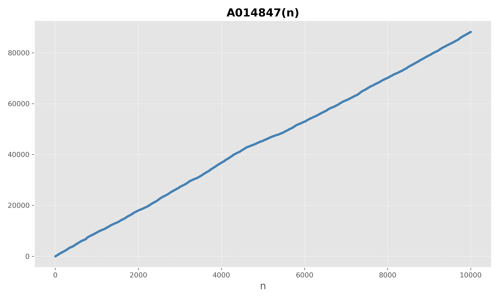

1 INTRODUCCIÓN
Relacionar dos secuencias distintas de números enteros en la On-Line Encyclopedia of Integer Sequences (OEIS) abre conexiones entre dentro de la información matemática disponible1. La secuencia de números enteros, A004782 [2], está compuesta por los números n que cumplen:
n \in \{A004782\} \Leftrightarrow \frac{2 (2n-3)!}{n! (n-1)!} \in \mathbb{N} \tag{1}
Y está estrechamente relacionada con la secuencia A014847 [3], formada por los números n dónde el enésimo número de Catalan C_{n} es divisible por n
n \in \{A014847\} \Leftrightarrow n \vert C_{n} \tag{2}
Los números de Catalan [4] aparecen con mucha frecuencia en combinatoria y otras áreas de las matemáticas y están definidos por la expresión: C_{n} = \frac{1}{(n+1)}\binom{2n}{n} \tag{3}
están relacionados con los coeficientes binomiales centrales [5] y los primeros términos de la secuencia de los números de Catalan son:
1, 1, 2, 5, 14, 42, 132, 429, 1430, 4862, 16796, \dots
2 ENUNCIADO
A004782(n) = A014847(n) + 1 \tag{4}
3 DEMOSTRACIÓN
Partiendo de las funciones f(n) y g(n):
f(n) = \frac{2 (2n-3)!}{n! (n-1)!} \tag{5}
g(n) = \frac{C_{n}}{n} = \binom{2n}{n} \frac{1}{(n+1) n} \tag{6}
Se puede comprobar como f(n+1) es igual a g(n) por cálculo directo:
f(n+1)=\frac{2 (2n-1)!}{(n+1) {(n!)}^2} = \frac{2n (2n-1)!}{n(n+1) {(n!)}^2} = \frac{(2n)!}{n (n+1) {(n!)}^2}= \\ \binom{2n}{n} \frac{1}{(n+1) n} = g(n) \tag{7}
Por lo tanto:
f(n+1) \in \mathbb{N} \Longleftrightarrow g(n) \in \mathbb{N} \Longleftrightarrow n+1 \{A004782\} \Longleftrightarrow n \in \{A014847\} \tag{8}